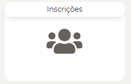
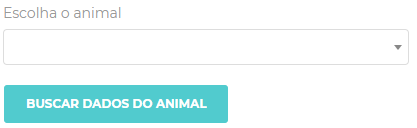
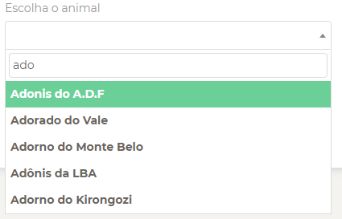
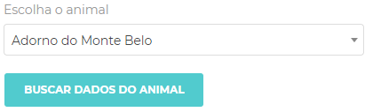
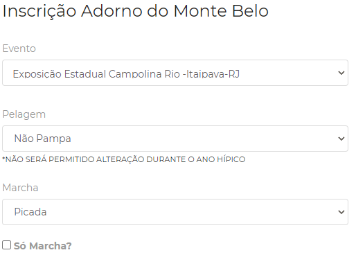
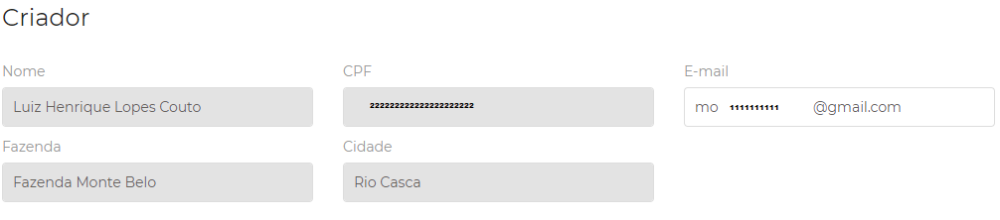
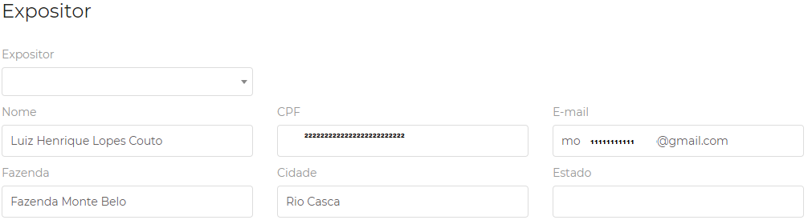
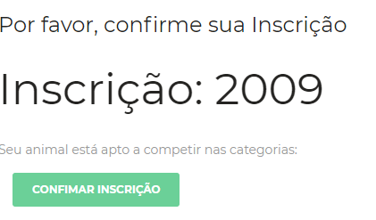

Portal ajuda Campolina - Eventos e Ranking! Parceiro.
Para o promotor criar uma nova inscrição, basta ir em:
Configurações >
Inscrições > 
e depois clicar no botão Novo > 
Na tela do botão NOVO:
Dentro no botão novo você promotor irá visualizar uma caixa para seleção do animal.
1.Abra a caixa.
.
2.Digite as 3 primeira letras do nome do animal.

3.Clique sobre o nome registrado e depois em Buscar dados do animal.

4.Selecione o Evento, a Pelagem, Marcha, caso o animal irá participar apenas da competição marcha, seleciona a caixa Só Marcha.

5.Confira os dados do criador, pois ele não se altera, ele dá traz diretamente do servidor da Campolina.

6.Selecione o nome do expositor. Deverá digitar o nome e as informações já serão preenchidas, mas é permitido atualizar alguns campos de informação.

7.Clique no botão Próximo.
8.Clique em Confirmar inscrição.

Proxíma etapa é gerar catálogo:
Depois de inscrever todos os animais no evento, você deverá ir no menu na lateral do sistema e clicar em Relatórios.